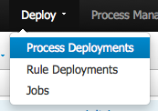

Lab 07 - Running rewards process
Lab Goal
To build, deploy, and complete rewards process including task forms for approving an employee rewards submission
Running rewards process
Time to run our new rewards process by submitting ourselves for a reward, evaulating this award as the HR department in the user task, submit that decision in the form provided, and verify that the personnel file got updated and that we are notified of the results with an email.Intermezzo
- We have e-mail task, but no SMTP server?
- Let's use custom WorkItemHandler to log instead of mail:
right pane -> OPEN PROJECT EDITOR
Intermezzo
- We need to get a specific KnowledgeBase setup
Project Settings -> Knowledge bases and sessions
Intermezzo
Add -> 'rewards' in pop-up -> OK- Select 'rewards' KnowledgeBase and make it default.
Intermezzo
- Under Knowledge Sessions
Add -> 'rewardsSession' in pop-upcheck 'Default' boxState: 'Stateful'Clock: 'Realtime'
Intermezzo
- Finally, add EMAIL Work Item Handler.
click on 'rewardsSession' entry pencil mini-icon to edit sessionclick ADDName: 'Email'Type:new org.jbpm.process.instance.impl.demo.SystemOutWorkItemHandler()- Close pop-up and save Project Editor
Intermezzo
- Now when we run our project, the email task will not fail.
- Instead of using SMTP server, we write to server log.
- This is an example of overriding a default work item handler with a custom implementation.
Ensure project builds
- Before you build project, ensure there are no active deployments
Deploy -> Process Deployments- if exists an entry for
Rewards 1.0then remove by clicking on mini icon



Deploy project
- right pane ->
OPEN PROJECT EDITOR -> BUILD (top right) -> BUILD & DEPLOY (should see green pop-up 'Build Successful')

Running rewards process
- Now we can examine our deployed process definition
Project Authoring -> Process Mangement -> Process Definitions- To view our definition details, click on it
Running rewards process
- An overview of process definition details is given here
- You can start a process instance from here by clicking the New Instance button
Running rewards process
- We can also start a process instance from the Process Definition view by clicking the start-icon under Actions
Running rewards process
- Either way, we get a popup start process form that we designed previously
- We fill in the rewards submission details and click on the arrow at the bottom
Running rewards process
- Watch for the yellow popup bar stating Process instance started
- Now examine the process instance view,
Process Management -> Process Instances - notice progression to Approve Reward task
Running rewards process
- Open the task list to view waiting user tasks
Project Authoring -> Tasks -> Tasks List- Our task is in the Active and Group lists until claimed
Running rewards process
- Click on the task item and it will present the form we designed
- We can browse the Details, Assignments and Comments
- But we want to
CLAIMthe task to start working on it, so click the button in the form under the Work tab
Running rewards process
- Notice that the form changes to allow you to
COMPLETEthe task - Also note that the task is not in the
GROUP, but inPERSONAL - Presented the task form on the right as we designed it, data read-only, approval check box
- But wait.... something is wrong???
Intermezzo
- The read-only data for amount and explaination from our Award object is missing?
- This is a problem and left to you for extra credit to fix
- Hint: mappings of data in forms...
Running rewards process
- Even though the data is not available for viewing right now, we can approve or deny the request
- We will approve this request by checking the box (leave blank to deny) and click on Complete button
Running rewards process
- You should see a yellow popup bar stating task was completed
- Then we are presented with an empty task list as we are done
- Now we can go back and view the completed process instance
Process Management -> Process Instances
Running rewards process
- The initial view is empty as you are looking at Active process instances
- We need the Completed instances, here I have just the one, yours might differ
- Click on any entry to view an instance
Running rewards process
- Here we selected process instance with ID 1
- There are various details we can examine, like the Log to see the what happened
Running rewards process
- That was the Business user view of events, switch to Technical for more depth
Running rewards process
- What is more interesting is an image of the paths taken which is found under Views button
Options -> Process Model

Running rewards process
- The grey path is the one taken by this instance
Running rewards process
- Also interesting are the values that the process variables contained
- click on tab
Process Variables - View variable values over time by clicking any clock icon
Running rewards process
- Now lets start a new process instance (remember how?) and not complete it
- We will leave it to make the BAM (Business Activity Monitoring) dashboards interesting
- After starting a new process let's open the Process & Task Dashboard
Dashboards -> Process & Task Dashboard
Running rewards process
- Dashboard shows historical BPM information
Running rewards process
- Drill down into Instances by process, click on it (top left)
- Now you see the status of the instances, a not assigned task from our active process instance
Running rewards process
- Video tour showing how it works:
Ready for more?
Next up, new requirements leads to next evolution of the reward process project... but you will need to follow the continuation of this project online, where we build more advanced BPM functionality into our Rewards process project and there are many more workshops to explore.

- JBoss BRMS & BPM Suite Articles
- JBoss BPM Suite Demos
- JBoss bpmPaaS Demos